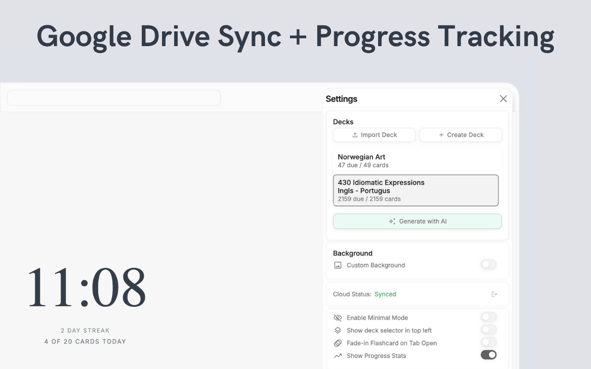
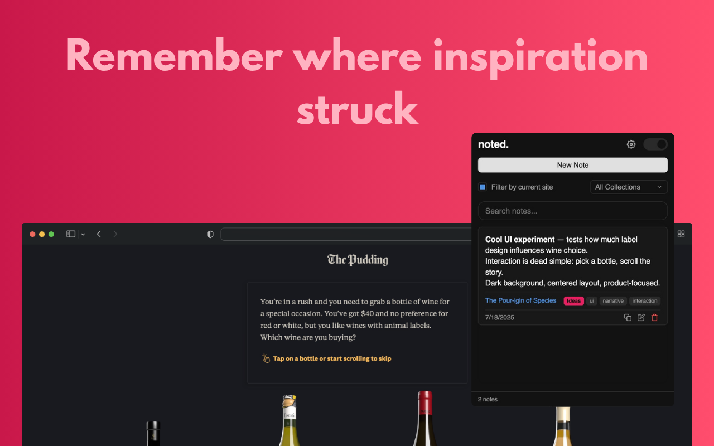
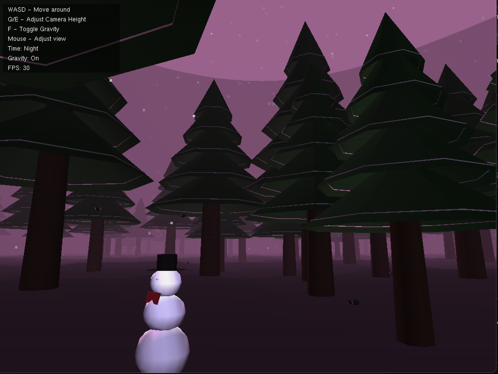
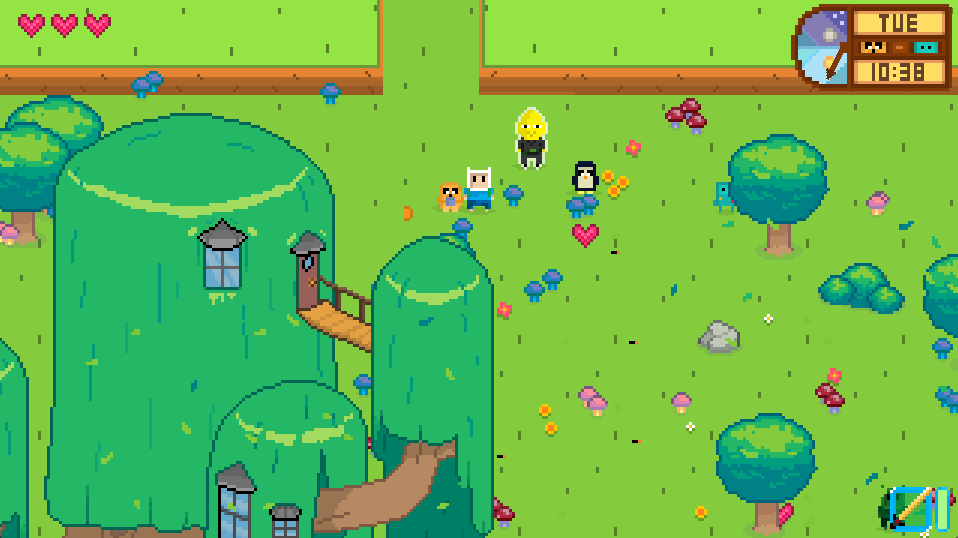

cs student & developer
Computer Science student at Northumbria University. I build browser extensions, games, and web apps — focused on clean, useful software.

New-tab flashcard extension with spaced repetition. Import Anki decks or let AI generate decks from any text.

Minimal note-taking extension that links notes to the website they came from. Tags, instant search, offline support.

3D winter scene in OpenGL and Python — procedural terrain, particle snow, fog, gravity, and a first-person camera.

2D adventure game inspired by Adventure Time — exploration, interactive elements, and inventory management in GameMaker.